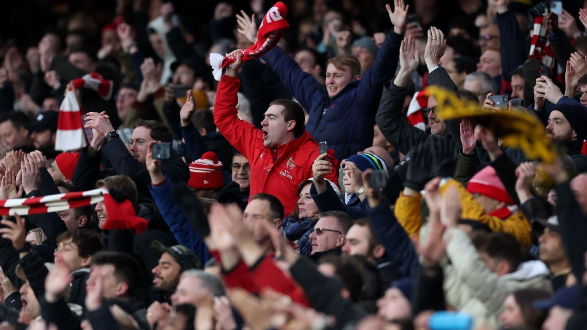
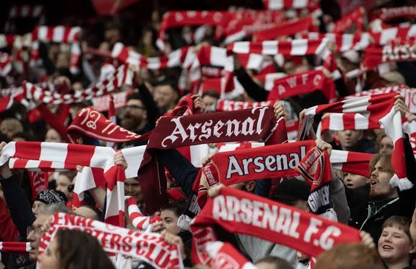

Arsenal Football Club is much more than a football team to me. It represents history, passion, identity, and a sense of belonging that has been built over generations. My admiration for Arsenal comes not only from what happens on the pitch, but also from everything the club represents beyond football.
Founded in 1886, Arsenal has built one of the most remarkable histories in English football. From its early years in Woolwich to its journey through Highbury and the Emirates Stadium, the club has experienced moments of glory, difficult periods, legendary players, unforgettable managers, and generations of supporters who have remained loyal through it all. The club's history is a reflection of resilience, ambition, and the constant desire to move forward.
What makes Arsenal even more special is its relationship with its supporters. The Gunners' community is spread across London and far beyond England, bringing together people from different cultures, backgrounds, and generations. For many fans, Arsenal is not simply a club they support; it is part of their identity and a connection they share with millions of people around the world.
Arsenal has also had a significant social impact. Through its community initiatives, charitable work, youth programs, and efforts to create opportunities for young people, the club has shown that football can be a powerful force for positive change. Its influence goes beyond the stadium, reaching communities and inspiring people through sport, education, and social action.
This website is my way of expressing my admiration for Arsenal and its incredible story. It is a tribute to the club, its players, its history, and, above all, its supporters. Arsenal is more than the results of a match — it is a legacy built by generations, a community united by passion, and a club whose story continues to be written.

